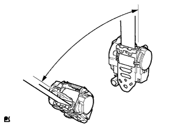
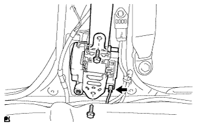
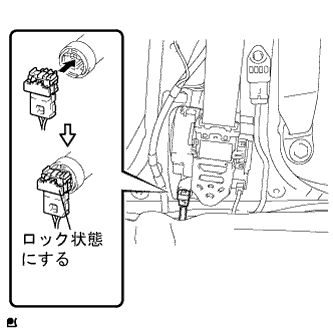
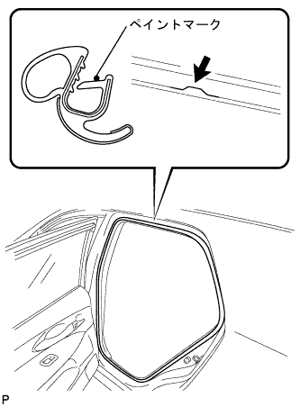

Front Seat Outer Belt Assembly RH Installation |
| 1. Install Front Seat Outer Belt Assembly RH |
Inspect ELR Lock Starting Tilt Angle
 |
When the retractor is moved slowly from its installed position, check that the belt does not lock within 15° in any direction, and that it remains locked at 45° or more.
 |
Temporarily tighten the front seat outer belt assembly RH with the 2 bolts.
Fully tighten the upper bolt.
Fully tighten the lower bolt.
Connect the connector.
 |
Connect the connector and lock the locking button.
 |
Install the shoulder anchor of the front seat outer belt assembly RH with the nut.
| 2. Install Center Pillar Garnish LH |
| 3. Install Center Pillar Garnish LWR LH |
| 4. Install Front Seat Outer Belt Assembly Floor Anchor |
 |
Install the floor anchor portion of the front seat outer belt assembly RH with the bolt.
| 5. Install Lap Belt Outer Anchor Cover |
| 6. Install Rear Door Opening Trim Weatherstrip LH |
 |
Align the paint mark (yellow) on the weatherstrip with the arrow on the body side shown in the illustration, and install the rear door opening trim weatherstrip LH.
| 7. Install Rear Door Scuff Plate LH |
| 8. Install Front Door Opening Trim Weatherstrip LH |
 |
Align the paint mark (pink) of the weatherstrip with the arrow part on the body side shown in the illustration, and install the front door opening trim weatherstrip LH.
| 9. Install Front Door Scuff Plate RH |
 |
Engage the 10 claws and install the front door scuff plate RH.
| 10. Connect Battery Negative Terminal |
| 11. Inspect Seat Belt Function |
)| 12. Inspect Airbag Warning Light |
 |
Check that the warning light comes on when the IG is turned ON.
Check that the warning light goes off approximately 6 seconds after the IG is turned ON.
| 13. Setting Procedure When Disconnecting/Reconnecting Battery Terminal |
)